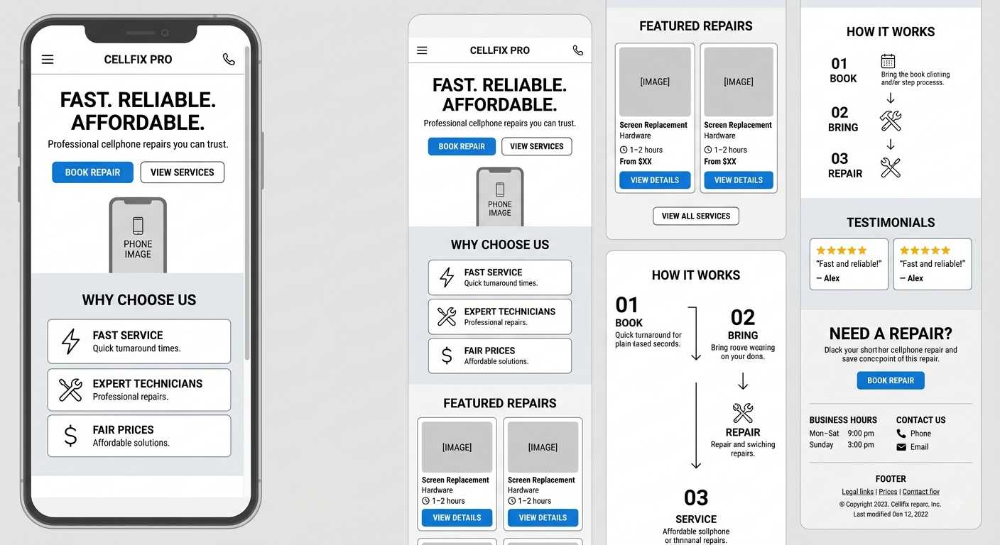
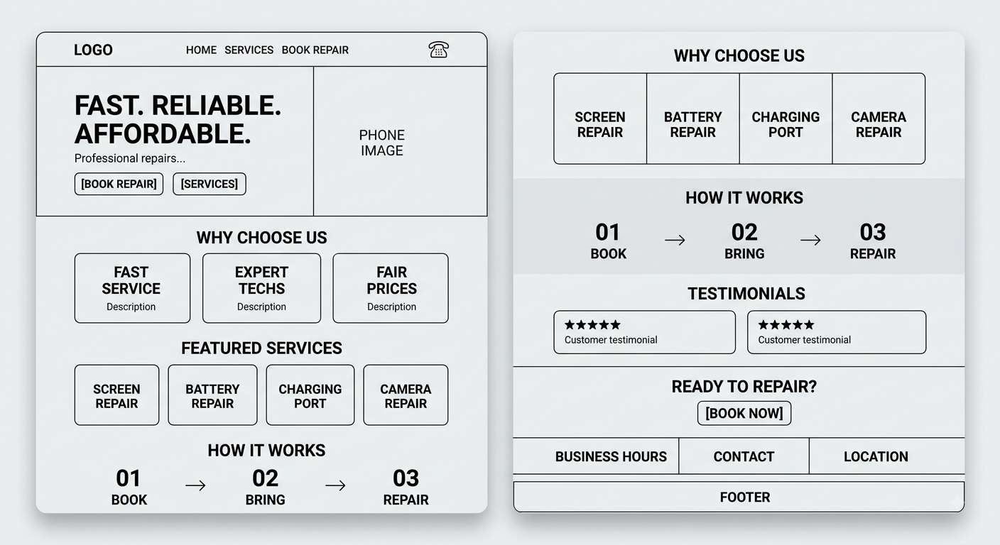

1. Site Name
CellFix Pro
The name CellFix Pro represents a professional cellphone repair business. It is short, memorable, and clearly communicates the main service offered by the business.
Optional domain: cellfixpro.com
2. Site Purpose
CellFix Pro provides customers with information about cellphone repair services, estimated repair cost, business hours, location, contact information, and the repair process. The website will also provide an online appointment request form customers can conveniently schedule a repair.
3. Scenarios
The following questions represent common needs of CellFix Pro's target customers:
- How much does it cost to replace my phone screen?
- Can I book a cellphone repair appointment online?
- How long does a battery replacement usually take?
- Where is CellFix Pro located ans what are the business hours?
4. Color Scheme
The CellFix Pro Color scheme uses professional, modern colors that create a trustworthy technology-focused appearance.
Dark Navy - #0F172A
Used for the header, footer, navigation area, and major headings.
Blue - #2563EB
Used for buttons, links, accents, and important interactive elements.
Light Gray - #F8FAFC
Used for the main page background and to create visual separation between sections.
Dark Gray - #1F2937
Used for body text and supporting content.
5. Typography
Poppins
Poppins will be used for the website title, headings, navigation, and other prominent text.
Roboto
Roboto will be used for paragraphs, lists, form, buttons, and general body content.
6. Wireframes
The following wireframes represent the planned CellFix Pro homepage layout for small and large viewports. The final submitted wireframes will be hand-drawn or manually created black-and-white sketches.

